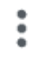
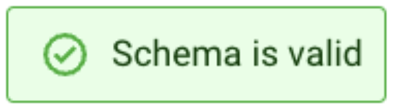

Módulo 2 - Streaming Analytics com Cloudera Stream Processing
1. Visão geral
Neste módulo, você irá praticar os recursos de analytics em streaming do Cloudera Stream Processing usando o SQL Stream Builder para desenvolver e implantar, em produção, um job de streaming em tempo real. Você vai aproveitar o fluxo do NiFi implantado no CDF-PC a partir do workshop anterior e demonstrar como consultar dados ao vivo e, em seguida, gravá-los (sink) em outro destino. Você aprenderá a:
- Usar o Stream Messaging Manager para inspecionar tópicos do Kafka.
- Criar um Projeto no SQL Stream Builder (SSB).
- Registrar Schema Registry e catálogos Kudu no SSB.
- Criar Tabelas Virtuais no SSB.
- Criar e executar Jobs no SSB.
2. Inspecionar tópicos Kafka no SMM
Use o SMM para exibir o tópico Kafka
- Faça login no SMM.
-
e filtre o tópico
-syslog-avro , que foi criado pelo fluxo do NiFi no Módulo 1
-
Clique no ícone Profile do tópico, conforme mostrado abaixo:
-
Na página do tópico, clique na aba DATA EXPLORER:
-
Use a ferramenta Data Explorer para o tópico Avro e verifique que os dados estão em formato binário. Altere o Value Deserializer para Avro para usar a integração com o Schema Registry e verifique que os dados foram desserializados corretamente:
{kind=link}
{kind=link}
{kind=link}
{kind=link}
{kind=link}
{kind=link}
{kind=link}
3. Criar um Projeto no SSB e configurar um repositório GitHub para ele
Nesta seção, você começará a se familiarizar com o SQL Stream Builder (SSB) e criará um projeto para usar ao longo do restante deste workshop. Projetos no SSB podem ser armazenados em um repositório Git, e você aprenderá como configurar seu projeto para usar um.
Antes disso, porém, você precisa criar um repositório Git na sua própria conta do GitHub. Recomenda-se que você registre uma chave SSH na sua conta do GitHub para poder usar autenticação via SSH. Usar autenticação BASIC (usuário e senha) não é recomendado, pois isso não funcionará se você tiver autenticação de dois fatores habilitada.
- Faça login em github.com com seu usuário pessoal.
⚠️ Importante: use uma conta pública do GitHub
Você deve usar uma conta pessoal do site público
github.com. O GitHub interno da Cloudera não é acessível peloSSBe não funcionará.
- Clique em Settings da sua conta e, em seguida, no menu SSH and GPG keys. Se você já tiver uma chave SSH registrada e possuir uma cópia da chave privada no seu computador, você pode usá-la ao configurar seu Projeto no SSB.
Se você não tiver uma chave SSH registrada ou não souber onde está o arquivo da chave privada associada à chave registrada, clique no botão New SSH key e crie/registre uma nova.
{kind=link}
- Clique no ícone de "plus" no canto superior direito da página e selecione New repository para adicionar um novo repositório. Nomeie-o como ssb-workshop e configure-o como no exemplo abaixo:
{kind=link}
-
Garanta que a opção “Add a README file” esteja marcada.
-
Depois que o repositório for criado, clique no botão Code na página do repositório, selecione a aba SSH e copie a URL associada. Essa é a URL que você usará para configurar o projeto no SSB:
{kind=link}
{kind=link}
- No CDP Console, encontre o Streaming Analytics (Flink) DataHub e clique nele para abrir a página do DataHub.
- Clique no ícone para abrir a interface do SSB. Você perceberá que já existem dois projetos criados por padrão:
- ssb_default - um projeto global acessível a todos os usuários
_default - um projeto privado acessível apenas ao seu usuário
{kind=link}
Você não usará nenhum deles. Em vez disso, você criará um projeto conectado a um repositório GitHub a seguir.
-
Na página Projects, clique no botão New Project:
-
Insira os seguintes detalhes na caixa de diálogo Create Project:
- Name: \<um nome único para o seu projeto>
- Clone URL: \<a URL que você copiou no passo 4>
- Branch: main (por padrão, um repositório GitHub é criado com a branch main. Se você alterou isso, garanta que especifique aqui o nome correto da branch)
- Authentication: Enabled
- Method: SSH
- Private Key: \<faça upload do arquivo de chave privada associado à chave na sua conta do GitHub>
- Public Key: \<faça upload do arquivo de chave pública associado à chave na sua conta do GitHub>
- Passphrase for Private Key: \<se sua chave privada é protegida por uma passphrase, informe-a aqui; caso contrário, deixe em branco>
-
O novo projeto será listado na página Projects:
-
Clique no botão Switch do novo projeto para alternar para ele, e você verá a página principal do seu projeto::
{kind=link}
{kind=link}
{kind=link}
{kind=link}
{kind=link}
4. Registrar uma fonte de dados Kafka
Antes de usar o SSB para processar dados de tópicos Kafka, você deve registrar um ou mais clusters Kafka como Data Sources no seu projeto. Nesta seção, você registrará o Kafka DataHub como sua fonte de dados.
- No workspace do seu projeto, expanda o item Data Sources na árvore de navegação. Você verá dois itens abaixo dele: "Kafka" e "Catalog"
-
Clique no menu kebab (

) do nó Kafka para criar uma nova fonte de dados Kafka:

-
Forneça os seguintes detalhes na caixa de diálogo Kafka Data Source:
- Name: <nome da sua fonte de dados. Ex.: dh-kafka>
- Brokers: <lista de brokers separada por vírgula> (veja as Notas da seção 3.2.2 do Módulo 1 para mais detalhes sobre como encontrar os endereços dos brokers Kafka)
- Protocol: SASL/SSL
- SASL Mechanism: PLAIN
- SASL Username: <seu workload username>
- SASL Password: <seu workload password>
{kind=link}
{kind=link}
{kind=link}
5. Registrar um catálogo do Schema Registry
O Schema Registry armazena schemas usados para ler/escrever dados de/para tópicos Kafka. Registrar uma instância do Schema Registry no SSB cria automaticamente tabelas do SSB para os schemas obtidos, tornando mais simples começar a acessar dados desses tópicos.
Nota: Para que isso funcione, os schemas armazenados no Schema Registry precisam estar armazenados com o mesmo nome do tópico Kafka.
- No workspace do seu projeto, navegue para Data Sources -> Catalog. Clique no menu kebab do item Catalog e selecione New Catalog para criar um novo catálogo.

- Insira os seguintes detalhes na caixa de diálogo Catalog:
- Name: <nome do catálogo. Ex.: dh-schreg>
- Catalog Type: Schema Registry
- Kafka Cluster: <selecione a fonte de dados Kafka criada na seção anterior>
- Enable TLS: Enabled
- Schema Registry URL: https://<schreg_hostname>:7790/api/v1 (veja as Notas da seção 3.2.2 do Módulo 1 para mais detalhes sobre como encontrar o hostname do Schema Registry)
{kind=link}
-
Clique no link Validate para validar o catálogo. Se o catálogo for validado com sucesso, você verá uma mensagem dizendo "Data Source is valid". Se você passar o mouse sobre a mensagem, verá quantas tabelas foram descobertas no Schema Registry durante a validação:
-
Depois que o catálogo for validado, pressione o botão Create para registrar o catálogo do Schema Registry.
-
Após a conclusão do registro, você pode navegar pelas tabelas do Schema Registry indo em External Resources> Virtual Tables > [schema_registry_catalog_name] > default_database:
{kind=link}
{kind=link}
{kind=link}
- As Virtual Tables são criadas com base nos schemas obtidos do Schema Registry. Os nomes das Virtual Tables são os mesmos dos nomes dos schemas.
Nota: Os nomes dos tópicos no Kafka também devem ser os mesmos do nome do schema associado a ele.
{kind=link}
6. Registrar um catálogo do Kudu
Assim como um catálogo do Schema Registry, um catálogo do Kudu disponibiliza automaticamente as tabelas do Kudu para uso no SSB, simplificando o processo de mapear Virtual Tables para as tabelas reais do Kudu. Nesta seção, você registrará o cluster Kudu do DataHub como um catálogo no seu projeto do SSB.
Isso tornará a tabela syslog_severity, que já foi criada no Kudu, disponível para consultas no SSB.
-
No workspace do seu projeto, navegue para Data Sources -> Catalog. Clique no menu kebab do item Catalog e selecione New Catalog para criar um novo catálogo.
-
Insira os seguintes detalhes na caixa de diálogo Catalog:
- Name: \<nome do catálogo. Ex.: dh-kudu>
- Catalog Type: Kudu
- Kudu Masters: \<kudu_master1>:7051,\<kudu_master2>:7051,\<kudu_master3>:7051 (veja as Notas abaixo)
{kind=link}
Notas:
Kudu Masters: O hostname dos nós master do Kudu pode ser encontrado na página do DataHub Real-time Data Mart (Kudu). No CDP Console, encontre seu Real-time Data Mart DataHub e clique na aba Nodes*. Copie o FQDN dos 3 masters, conforme mostrado na captura de tela abaixo.
O endereço completo dos masters a ser fornecido durante o registro do catálogo é o seguinte:
{kind=link}
-
Clique no link Validate para validar o catálogo. Se o catálogo for validado com sucesso, você verá uma mensagem dizendo "Data Source is valid". Se você passar o mouse sobre a mensagem, verá quantas tabelas foram descobertas no Schema Registry durante a validação:
-
Depois que o catálogo for validado, pressione o botão Create para registrar o catálogo do Kudu.
-
Após a conclusão do registro, você pode navegar pelas tabelas do Kudu indo em External Resources> Virtual Tables > [kudu_catalog_name] > default_database:
{kind=link}
7. Criar uma Tabela Kafka manualmente
Você viu que, ao registrar um catálogo do Schema Registry, o SSB mapeia automaticamente todos os schemas encontrados como tabelas do SSB que podem ser usadas para acessar dados nos tópicos Kafka nomeados de acordo com os schemas.
Às vezes, porém, você não tem um schema para um determinado tópico e ainda assim pode querer consumir ou produzir dados nesse tópico. No SSB, você pode criar manualmente uma tabela e especificar seu schema diretamente, bem como o mapeamento para um tópico Kafka existente. Nesta seção, você praticará isso usando o assistente Add Table.
-
No workspace do seu projeto, navegue para Data Sources -> Virtual Tables.
-
Clique no menu kebab do item Virtual Tables e selecione New Kafka Table para criar uma nova virtual table.
{kind=link}
-
Insira os seguintes detalhes na caixa de diálogo Kafka Table:
* Table Name: syslog_data
* Kafka Cluster: \<selecione a fonte de dados Kafka criada anteriormente>
* Data Format: JSON
* Topic Name: \<userid>-syslog-json -
Quando você seleciona Data Format como AVRO, é necessário fornecer a Schema Definition correta ao criar a tabela para que o SSB consiga processar com sucesso os dados do tópico.
{kind=link}
Para tabelas JSON, no entanto, o SSB pode observar os dados fluindo pelo tópico e tentar inferir o schema automaticamente, o que é bastante útil em alguns momentos. Obviamente, deve haver dados no tópico previamente para que esse recurso funcione corretamente.
Nota: O SSB faz o melhor possível para inferir o schema corretamente, mas isso nem sempre é possível e, às vezes, tipos de dados são inferidos incorretamente. Você deve sempre revisar os schemas inferidos para verificar se estão corretos e fazer os ajustes necessários.
Como você está lendo dados de um tópico JSON, clique em Detect Schema para obter o schema inferido. Você deverá ver o schema ser atualizado na aba Schema Definition.
- Você também notará que aparece uma mensagem "Schema is invalid" após a detecção do schema. Se você passar o mouse sobre a mensagem, ela mostrará o motivo:
{kind=link}
Você corrigirá isso no próximo passo.
- Cada registro lido do Kafka pelo SSB tem uma coluna de timestamp associada do tipo TIMESTAMP ROWTIME. Por padrão, esse timestamp é obtido do timestamp interno da mensagem Kafka e é exposto por meio de uma coluna chamada eventTimestamp.
Entretanto, se o payload da sua mensagem já contém um timestamp associado ao evento (event time), você pode querer usar esse valor em vez do timestamp interno do Kafka.
Neste caso, a mensagem syslog possui um campo chamado "timestamp" que contém o timestamp que você deve usar. Você quer expor esse campo como a coluna "event_time" da tabela. Para isso, clique na aba Event Time e informe as seguintes propriedades:
- Use Kafka Timestamps: Disable
- Input Timestamp Column: timestamp
- Event Time Column: event_time
- Watermark Seconds: 3
{kind=link}
-
Agora que você configurou a coluna de event time, clique em Detect Schema novamente. Você deverá ver o schema se tornar válido:

-
Clique no botão Create and Review para criar a tabela.
- Revise o DDL da tabela e clique em Close.
{kind=link}
8. Desbloquear seu keytab
Antes de executar jobs no SSB, você deve desbloquear seu keytab seguindo os passos abaixo:
- Garanta que você está na página inicial do SSB. Se não estiver, clique no link Projects no topo da tela
-
Clique no ícone/nome do seu usuário no canto inferior esquerdo da tela e selecione Manage Keytab:
-
Digite seu usuário e senha e clique em Unlock Keytab:
{kind=link}
{kind=link}
9. Criar jobs de Streaming SQL
Nesta seção, você praticará a criação e execução de jobs SQL Streaming para implementar diferentes tipos de casos de uso. Você criará os seguintes jobs:
- Job 1: Selecionar registros de uma virtual table Kafka
- Job 2: Selecionar registros de uma virtual table do Schema Registry
- Job 3: Usar uma função de janelamento (windowing)
- Job 4: Enriquecer dados em streaming com fontes de dados em repouso (data-at-rest)
9.1. Job 1: Selecionar registros de uma virtual table Kafka
- No console do SSB, garanta que você alternou para seu projeto e está na página principal do projeto.
- Na visão Explorer, clique no menu kebab (
 ) do item Jobs e selecione New Job para criar um novo.
) do item Jobs e selecione New Job para criar um novo.
{kind=link}
- Digite job1 como Job Name e clique no botão Create:
{kind=link}
Você será redirecionado para o SQL Editor, onde pode executar diversas tarefas, incluindo:
1. Compor e executar queries SQL
2. Criar e gerenciar Materialized Views
3. Configurar seu job SQL

- Clique na área do editor SQL e digite a query do job.
Neste primeiro job, você simplesmente selecionará tudo da tabela syslog_data que você criou anteriormente. Observe que o editor tem auto-completion para keywords, nomes de tabelas etc. À medida que você digita, verá sugestões de conclusão sendo exibidas. Para selecionar uma opção, use as setas do teclado para navegar até a opção e pressione \<ENTER>.
Se a lista de opções não aparecer em uma determinada posição do cursor, você pode pressionar \<CTRL>+\<SPACE> para exibir a lista de sugestões de auto-completion.
- No editor, digite "SELECT * FROM " (com um espaço ao final) e depois pressione \<CTRL>+\<SPACE>. Selecione a tabela syslog_data na lista.
{kind=link}
- Clique em Execute.
A aba Logs mostrará que a execução do job foi iniciada e, assim que os dados forem recuperados, ela alternará automaticamente para a aba Results para exibir os resultados:
{kind=link}

- Você notará que a aba Results mostra aproximadamente um registro por segundo, mesmo havendo muito mais dados fluindo pelo tópico Kafka. Isso ocorre porque, por padrão, o SSB exibe apenas uma amostra dos dados na tela para dar ao usuário um feedback do que a query está recuperando. Se você deixar a query em execução, também notará que o polling da amostra será interrompido automaticamente após 100 registros terem sido recuperados.
Você pode alterar o comportamento de amostragem e outras configurações clicando no botão Job Settings, conforme abaixo:
{kind=link}
NOTA: Selecionar "Sample all messages" pode ter um efeito negativo na performance e também aumentará o consumo de recursos do seu navegador. Use isso apenas quando necessário para checar ou fazer troubleshooting dos dados.
- Pela aba Results, você pode ver que os dados contêm registros de todas as severidades. Se você quiser mudar isso, pode simplesmente parar, editar sua query e executá-la novamente.
Clique em Stop para parar o job e edite a query para que ela recupere apenas registros com severidade 3:
Clique em Execute e verifique os resultados para confirmar que a mudança foi efetiva.
- Quando terminar, Stop seu job. Na árvore Explorer, você pode ver todos os jobs e quais estão em execução. Você também pode parar jobs por ali clicando com o botão direito no item do job. Se o status do job não parecer correto, tente clicar no ícone Reload, mostrado abaixo:
{kind=link}
9.2. Job 2: Selecionar registros de uma virtual table do Schema Registry
Depois que as virtual tables são criadas no SSB, seu backend e formato de dados ficam transparentes para o usuário. As tabelas podem ser consultadas no SSB exatamente da mesma forma. Nesta seção, você executará a mesma query do job1 contra uma tabela que vem de um tópico Kafka em formato AVRO e verá que tudo funciona da mesma maneira:
-
Na visão Explorer, clique com o botão direito no item Jobs e selecione New Job para criar um novo job. Chame-o de job2.
-
Insira a mesma query do job anterior, mas usando a tabela \<userid>-syslog-avro (use o auto-completion para encontrar o nome correto da tabela - \<CTRL>+\<SPACE>). Você notará que o auto-completion irá prefixar o nome da tabela com os nomes do catálogo e do database:
Clique em Execute e verifique os resultados para confirmar que tudo funciona conforme esperado.
- Quando terminar, Stop seu job.
9.3. Job 3: Usar uma função de janelamento (windowing)
Um recurso poderoso do Flink e do SSB é a capacidade de realizar agregações por janelas em dados em streaming. Para mais informações sobre todas as opções de agregação disponíveis, confira a documentação do Flink sobre table-valued functions, window aggregation, group aggregation e over aggregation.
Nesta seção, você escreverá uma query que define uma janela deslizante (HOP) no stream syslog para contar quantos eventos de cada severidade estão sendo gerados em intervalos de 30 segundos. A janela de 30 segundos avança a cada 5 segundos, então a query produz resultados a cada 5 segundos para a janela anterior que terminou naquele ponto do tempo.
-
Na visão Explorer, clique com o botão direito no item Jobs e selecione New Job para criar um novo job. Chame-o de job3.
-
Insira a seguinte query no editor SQL:
Clique em Execute e verifique os resultados para confirmar que tudo funciona conforme esperado.
Dica: Se você não estiver vendo todas as contagens de todas as severidades para cada uma das janelas de agregação, tente definir o comportamento de amostragem como "Sample all messages"
- Quando terminar, Stop seu job.
9.4. Job 4: Enriquecer dados em streaming com fontes data-at-rest
Outro recurso poderoso do Flink/SSB é que você pode escrever queries juntando tabelas que possuem backends diferentes. Uma tabela de streaming em Kafka, por exemplo, pode ser juntada com tabelas batch armazenadas em bancos relacionais, Kudu ou até mesmo HDFS.
Isso abre uma série de possibilidades, como usar tabelas data-at-rest para enriquecer dados em streaming. Nesta seção, você criará um job que enriquece o stream de agregação produzido pela query do job3 juntando-o com a tabela syslog_severity, que está armazenada no Kudu e possui a definição de cada um dos níveis de severidade.
-
Na visão Explorer, clique com o botão direito no item Jobs e selecione New Job para criar um novo job. Chame-o de job4.
-
Insira a seguinte query no editor SQL:
SELECT a.window\_start, a.window\_end, a.severity, b.severity\_desc, count(\*) as severity\_count FROM TABLE( HOP(TABLE syslog\_data, DESCRIPTOR(event\_time), INTERVAL '5' SECOND, INTERVAL '30' SECOND)) a JOIN **\[auto-complete the table default.syslog\_severity\]** b ON a.severity \= b.severity GROUP BY a.window\_start, a.window\_end, a.severity, b.severity\_desc Click **Execute** and check the results to verify that everything works as expected. - Quando terminar, Stop seu job.
10. Criar um job de Produção enviando dados para o Kafka
Até agora, os resultados de todos os jobs que você criou foram exibidos na tela, mas não foram salvos em nenhum lugar. Ao executar jobs em produção, você vai querer enviar os resultados para algum destino (Kafka, bancos de dados, Kudu, HDFS, S3 etc.).
O SSB torna muito fácil escrever dados em diferentes destinos. Tudo o que você precisa fazer é criar uma Virtual Table mapeada para esse destino e então executar um INSERT nessa tabela com os resultados da query que você está executando. Você praticará isso nesta seção modificando o job 4 para enviar seus resultados para um tópico Kafka.
Você começará criando um tópico para armazenar os resultados da sua query e então modificará o job4 para enviar sua saída de stream agregada e enriquecida para esse tópico.
- Abra a UI do SMM (o link está na página do Streams Messaging DataHub)
-
Clique no ícone de Topics e depois no botão Add New para criar um novo tópico
-
Insira as seguintes propriedades para o seu tópico:
- Topic Name: \<userid>-severity-counts
- Partitions: 1
- Availability: MAXIMUM
- Cleanup Policy: delete
{kind=link}
-
De volta à UI do SSB, selecione job4 no painel Explorer para abrir o SQL editor dele. Você deverá ver a query de agregação que você criou na seção anterior.
-
Antes de executar esse job em produção, você precisa criar uma Virtual Table no SSB e mapeá-la para o tópico Kafka \<userid>-severity-counts que foi criado acima.
A estrutura/schema dessa tabela deve corresponder à estrutura da saída da query que está sendo executada. Felizmente, o SSB possui um recurso de templates que torna isso muito simples.
Clique no botão Templates acima do SQL editor e selecione upsert-kafka > json.
{kind=link}
Você notará que um template CREATE TABLE foi inserido no início do editor. Role para cima e para baixo para verificar o conteúdo do editor. Por favor, NÃO execute ainda.
- O template adicionado é uma instrução CREATE TABLE para criar uma Virtual Table do tipo selecionado. Antes de executá-la, você precisa completar o template com as informações que faltam.
Faça as seguintes alterações no template:
1. Table name: altere o nome da tabela para <userid>_severity_counts
2. Primary key: adicione a seguinte cláusula de primary key após a última coluna da tabela (severity_count):
3. Properties: substitua todas as propriedades na cláusula WITH pelo seguinte:
'connector' = 'upsert-kafka: <data_source_name>',
'topic' = '<userid>-severity-counts',
'key.format' = 'json',
'value.format' = 'json'
- topic: <userid>-severity-counts
Há outras propriedades opcionais comentadas no template que você pode ignorar. O template finalizado deve ficar como o exemplo abaixo:
{kind=link}
- Com o mouse, selecione apenas o texto de toda a instrução CREATE TABLE e clique no botão Execute Selection para executar apenas essa instrução e criar a Virtual Table.
{kind=link}
Após a execução do CREATE TABLE, você pode ver a tabela criada na árvore Explorer:
{kind=link}
-
Após a tabela ser criada com sucesso, apague a instrução CREATE TABLE do SQL editor.
-
Modifique a query original no editor adicionando a seguinte linha antes da palavra-chave SELECT:
Sua instrução final deve ficar assim:
{kind=link}
-
Clique no botão Execute para submeter seu job para execução.
-
Você deverá ver a saída da query na aba Results assim que o job começar a executar. Você pode fechar a aba ou janela a qualquer momento e o job continuará rodando no cluster Flink.
- Abra a UI do SMM novamente, clique no ícone de Topics e procure pelo tópico <userid>-severity-counts.
-
Clique no ícone Data Explorer () do tópico para visualizar os dados no tópico. Você deverá conseguir ver dados adicionados recentemente com as agregações produzidas pelo job4:
{kind=link}
{kind=link}
11. Versionar as mudanças do seu projeto no GitHub
Agora que você concluiu as alterações no seu projeto (pelo menos por enquanto), você pode commitar as mudanças e versioná-las no seu repositório GitHub.
- Clique no ícone Source Control, conforme abaixo:
{kind=link}
- Clique na aba Push no topo, digite sua mensagem de commit e clique no botão Push.
{kind=link}
Se o push for bem-sucedido, você verá a seguinte mensagem:
{kind=link}
- Verifique o repositório do GitHub. As mudanças serão enviadas para o repositório remoto.
{kind=link}
12. Troubleshooting de jobs Flink/SSB
Se você tiver problemas ao executar seus jobs, siga os passos abaixo para checar detalhes do job no SSB e no Flink Dashboard.
- Clique no seu job (em Jobs na barra esquerda) para abrir o editor do job:

- Clique no link Flink Dashboard para abrir o Flink Dashboard do job

- Navegue pelas páginas do dashboard para explorar detalhes e métricas da execução do job:
{kind=link}
- Navegue pelo DAG do job. Clique em cada um dos operadores (caixas azuis) para ver métricas e detalhes de cada um, incluindo suas tarefas individuais.
{kind=link}
13. Problemas comuns
Se você encontrar algum problema, procure por problemas comuns e soluções abaixo:
| Issue: Job execution failed: Could not start Flink session for user: njayakumar" |
|---|
| Solução: Give users access to your cluster |